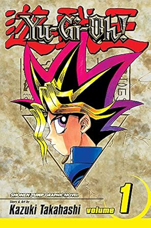

sinopse
Yu Gi Oh! Conta a história de Meta Game, um garoto tímido que adora todos os tipos de jogos, mas muitas vezes sofre bullying perto dele. Um dia, seu avô Solomon Muto deu-lhe um fragmento de um antigo artefato egípcio, o Enigma do Milênio.
Informações
- Nome:Yu-Gi-Oh!
- Nome alternativo: 遊☆戯☆王
- Tipo: Mangá
- Autor: Kazuki Takahash
- Volumes: 28
- Status: Esperando novas traduções
- Demográfico: Shōnen
- Gêneros: Demônios,Históricos,Monstros,Ação,Psicológico,Animais,Romance,Comédia,Sobrevivência,Aventura,Magia,Drama,Vida escolar,Fantasia,Delinquentes,Slice of Life,Sobrenatural,Mistério,Tragédia
- Editora: Jump Comics
- Publicado em: 1996